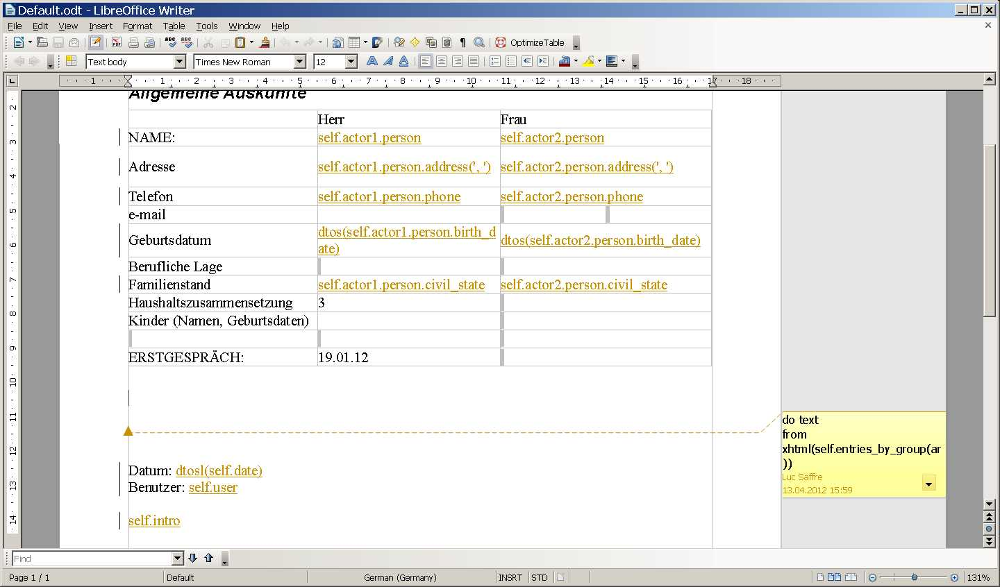
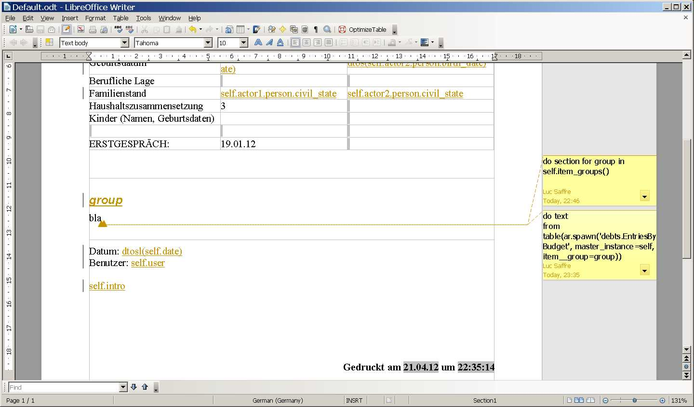
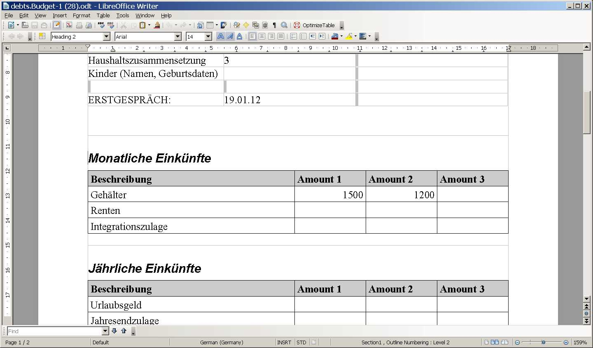

20120421¶
How to generate chunks of ODF XML¶
(Continued from yesterday).
I rewrote lino.utils.appy_pod.Renderer.insert_table()
completely so that now it uses lino.utils.xmlgen.odf
to generate the chunks.
See the source at /lino/utils/appy_pod.py.
- Don’t just compare the number of lines with yesterday’s snippet: insert_table() has become much more sophisticated since I also started to use more automatic styles to get a decently formatted table).
- The code using ODFPy remains more beautiful,
at least for the moment... one day I’ll maybe start
Using custom Element classes in lxml
to make
lino.utils.xmlgen.odfmore elegant. But that’s not really a priority since Lino application developers won’t need to struggle with this code.
So yes, it seems that ODFPy won’t get it into Lino. My first impression turned out to be wrong. It is possible to not use ODFPy, and I will do it because it is one dependency less for Lino.
I remain open to the idea of getting back to ODFPy in case it turns out that Søren continues to maintain ODFPy, because my method is not as beautiful and because lxml has a disadvantage of not playing well with mod_wsgi in certain configurations (see 0407).
Continued with debts.Budget template¶
Internal changes:
The actor of ActionRequests and TableHandles was internally still stored in an attribute report.
Changed to actor.
Renamed ActionRequest.spawn_request to spawn.
Adapted the default template to the new possibility. Here is how it looked before:
An entries_by_group method (see 0413) is no longer necessary. Here is the new template:
And a result (where the important evolution against last week is the formatting of tables):

{kind=link}
{kind=link}
{kind=link}